Je me suis mis à apprendre Unity en 2023, mais, sans me mentir à moi même, je n'ai pas beaucoup avancé. Passer sur Unity après Scratch est un moyen pour moi de réaliser de plus gros projets et de réaliser des vrais projets. Donc, oui, il faut vraiment que je me mette à apprendre Unity. Actuellement, mon gros problème est la programmation, car je ne sais pas grand chose de C#, le langage de programmation de Unity. Promis, dès que j'ai du temps, je me mets à tryharder le langage pour remplir cette page de nombreux jeux incroyables.